2001
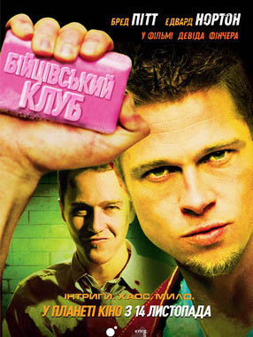
1999
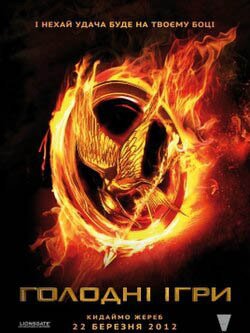
2012
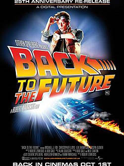
1985
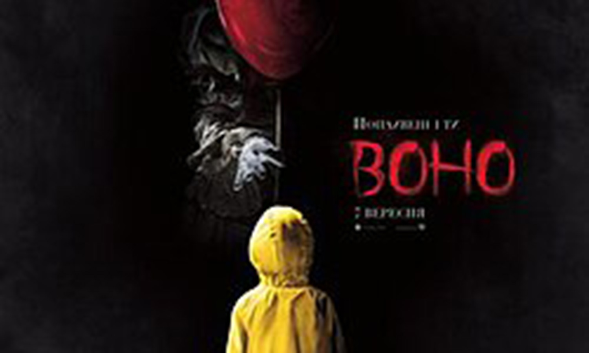
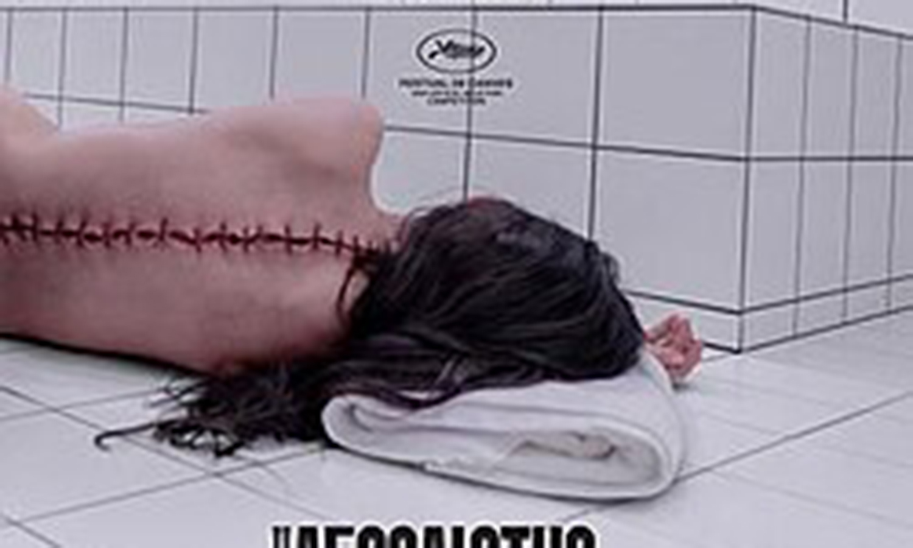
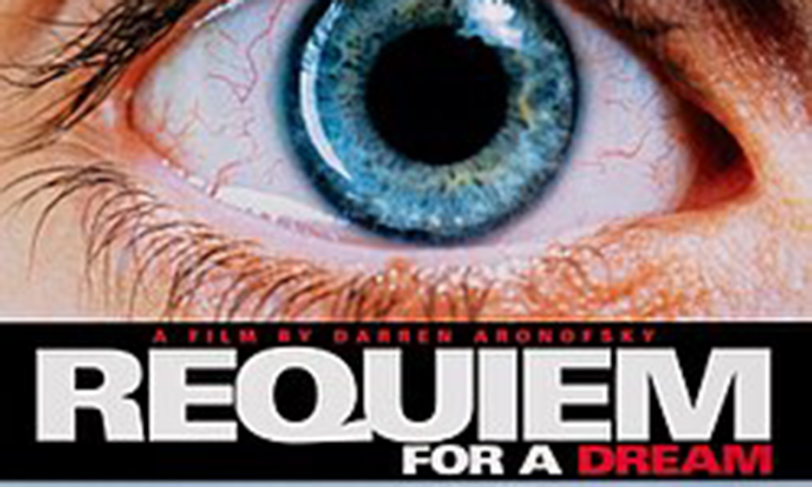
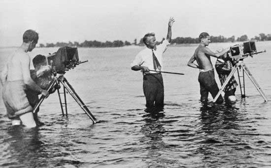
Фільм, також кінофі́льм, кіно, — аудіовізуальний твір кінематографії, що складається з епізодів, поєднаних між собою творчим задумом і зображувальними засобами, і є результатом спільної діяльності авторів, виконавців та виробників. У технологічному плані фільм являє собою сукупність рухомих зображень (монтажних кадрів), пов'язаних єдиним сюжетом.
Кожен монтажний кадр складається з послідовності фотографічних або цифрових нерухомих зображень, на яких зафіксовані окремі фази руху. Фільм найчастіше містить звуковий супровід.
розповідає про Томаса, який опиняється серед групи підлітків у загадковому Лабіринті без пам’яті про минуле. Щодня вони шукають вихід, ризикуючи життям через небезпечних створінь. Томас намагається розгадати таємницю місця й зрозуміти, хто стоїть за жорстоким експериментом, щоб урятувати друзів і вибратися на свободу назавжди.
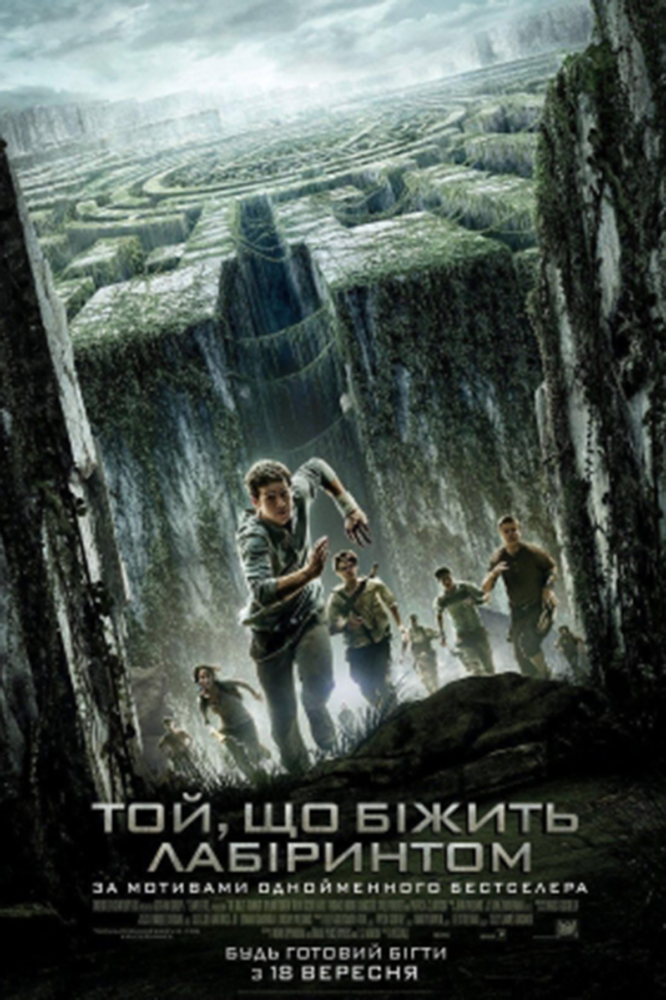
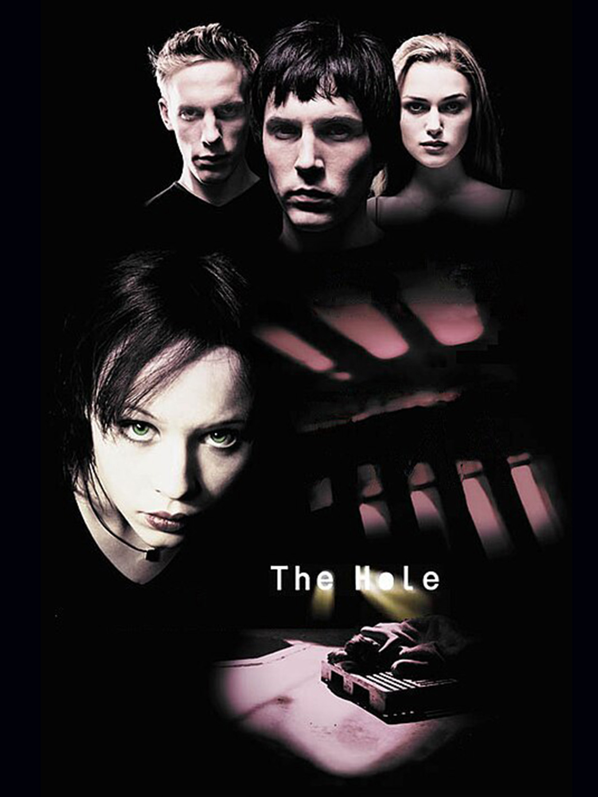
розповідає про чотирьох підлітків, які вирішують сховатися у старому підземному бункері заради розваги. Несподівано вони залишаються замкненими без їжі та зв’язку із зовнішнім світом. Через страх і відчай між друзями починаються конфлікти. Після порятунку поліція намагається дізнатися правду про загадкову трагедію та винних у ній.
розповідає про коваля Вілла Тернера та пірата Джека Горобця, які вирушають рятувати Елізабет Свонн від проклятої команди корабля «Чорна Перлина». Пірати перетворюються на скелетів під місячним світлом через давнє прокляття. Герої проходять небезпечні пригоди, битви та зраду, щоб зняти прокляття й урятувати життя.
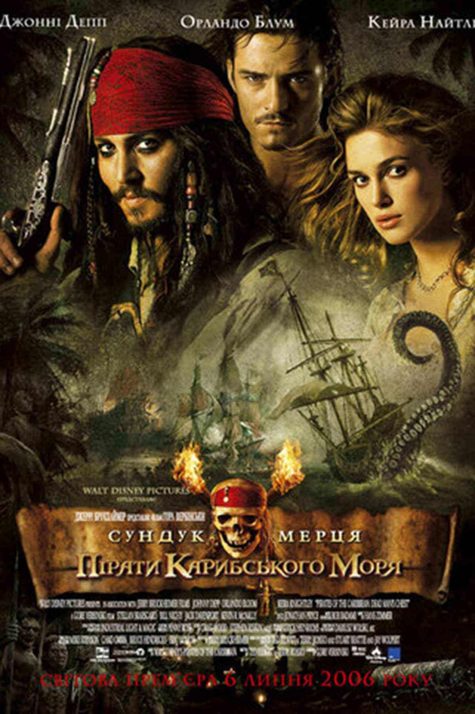
Серіа́л — поширене та популярне явище сучасного мистецтва, яке використовується переважно в літературі, кіно, телебаченні та анімації; спосіб організації та побудови художніх творів, котрий полягає в тому, що твір складається з багатьох окремих частин, зазвичай відносно невеликого розміру. Як правило, твори серіалу об'єднані спільними персонажами, інколи спільним антуражем подій чи лінійним сюжетом. Проте абсолютна більшість серіалів тримається саме на персонажах.

Friends розповідає про шістьох друзів — Рейчел, Моніку, Фібі, Джої, Чендлера та Росса, які живуть у Нью-Йорку. Вони разом переживають кохання, сварки, кар’єрні труднощі та кумедні життєві ситуації. Серіал показує силу дружби, підтримку й дорослішання через гумор, романтичні пригоди та щоденні проблеми молодих людей.
У містечку Гокінс зникає хлопець Вілл Байєрс. Його друзі знаходять загадкову дівчинку Одинадцять із надприродними здібностями. Вони відкривають існування паралельного світу — Догори Дриґом, де ховаються небезпечні істоти. Діти, батьки й шериф борються з монстрами та урядовими експериментами, намагаючись урятувати друзів і своє місто від смертельної загрози.
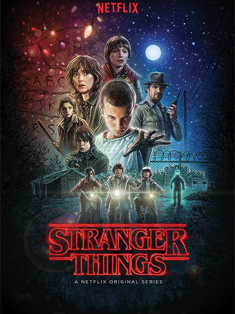
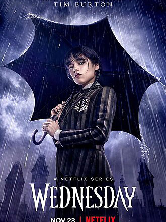
Wednesday розповідає про Венздей Аддамс, яка вступає до академії «Невермор» для незвичайних підлітків. Вона намагається контролювати свої здібності, розкрити серію загадкових убивств і дізнатися таємниці минулого своєї родини. Похмурий гумор, містика та детективні пригоди супроводжують її пошуки правди й боротьбу з небезпечним монстром.
Жанр (фр. genre, від лат. genus: рід, плем'я) — тематичний, технічно усталений тип художньої творчості, специфічний для кожного різновиду мистецтва, які визначається своєрідністю Жанр — тематичний, технічно усталений тип художньої творчості, специфічний для кожного різновиду мистецтва, які визначається своєрідністю зображення. У мистецтвознавстві — рід твору, що характеризується сукупністю формальних і змістовних особливостей. У кожній області художньої діяльності жанрова диференціація особлива залежно від специфіки виду мистецтва: такий жанровий ряд, як «побутовий жанр — портрет — пейзаж — натюрморт», властивий живопису і неможливий в музиці, літературі і кіномистецтві; так само «пісня — романс — кантата — ораторія» є ряд специфічно музичних жанрів. Однак існують загальні для всіх мистецтв жанрові диференціації, які лише по-своєму відбиваються в кожному виді.
Динамічні фільми з погонями, бійками та каскадерськими трюками.
Цей жанр фокусується на діях героїв, які долають складні перешкоди.
Світи майбутнього, космічні подорожі та передові технології.
Жанр досліджує вплив уявних технологій та науки на суспільство.
Емоційні фільми про життя, стосунки та внутрішні переживання героїв.
Цей жанр фокусується на конфліктах, почуттях і особистісному розвитку персонажів.
Веселі фільми з гумором, кумедними ситуаціями та смішними персонажами.
Цей жанр фокусується на розвазі глядача, створюючи легку та позитивну атмосферу.
Напружені фільми із загадками, небезпекою та непередбачуваними подіями.
Цей жанр фокусується на створенні suspense і тримає глядача в напрузі до самого кінця.
Страшні фільми з моторошною атмосферою, небезпекою та надприродними явищами.
Цей жанр фокусується на викликанні страху, напруги та сильних емоцій у глядача.
Емоційні фільми про кохання, стосунки та життєві переживання героїв.
Цей жанр фокусується на почуттях персонажів, романтичних історіях і драматичних подіях.
Анімаційні фільми, створені за допомогою малюнків або комп’ютерної графіки.
Цей жанр фокусується на яскравих персонажах, простих або казкових історіях і часто підходить для дітей та сімейного перегляду.